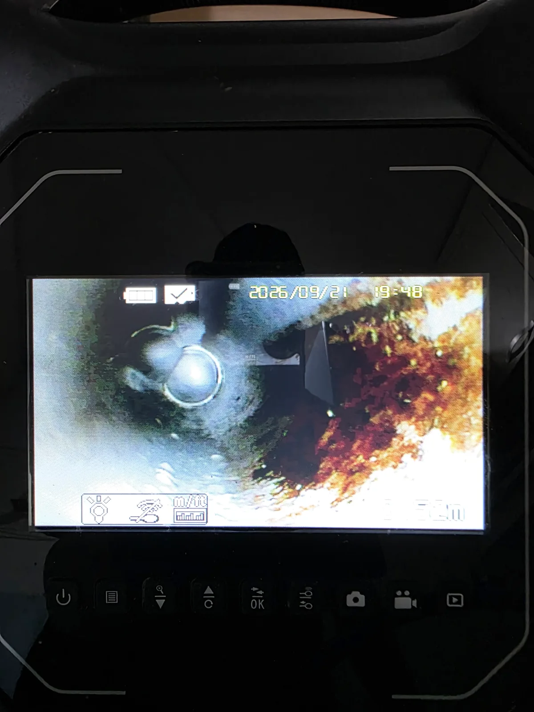

강남구 역삼동 싱크대막힘, 현장 도착 후 진단
싱크대 물이 바닥 배수구로 역류한다는 긴급 요청을 받고 장비를 준비해 강남구 역삼동 현장으로 출동했습니다.
현장에 도착해 가장 먼저 확인한 것은 물이 어디에서 다시 올라오는지였습니다. 싱크대막힘이라고 해서 무조건 장비부터 투입하면 정확한 원인을 놓칠 수 있기 때문입니다.
바닥 배수구 주변에는 오염수가 올라왔던 흔적이 남아 있었고, 배관 입구부를 확인하자 갈색의 기름때와 이물질이 상당량 쌓여 있었습니다.
배관 내시경으로 내부 상태도 함께 확인했습니다. 겉으로 드러난 역류만 멈추게 하는 것이 아니라 실제 배관 내부의 막힘 상태를 확인한 뒤, 먼저 석션으로 오염물을 회수하고 샤프트로 안쪽을 정리하는 순서로 작업 방향을 잡았습니다.
1단계: 증상 확인과 필요한 장비 작업
먼저 석션 장비를 이용해 배관 입구부에 집중적으로 쌓여 있던 기름때와 이물질을 뽑아냈습니다.
석션을 시작하자 배관 안에 머물러 있던 갈색의 기름때와 오염물이 그대로 쏟아져 나왔습니다. 사진으로 확인되는 양만 봐도 상당합니다. 싱크대에서 내려간 물이 왜 제대로 빠지지 못하고 바닥 배수구까지 거꾸로 올라왔는지 원인이 눈앞에 드러난 순간이었습니다.
이처럼 오염물이 많이 쌓인 배관은 무작정 안쪽으로 밀어내기보다 먼저 회수할 수 있는 이물질을 밖으로 제거하는 것이 중요합니다. 석션으로 입구부를 정리해 다음 작업을 위한 물길과 작업 공간을 확보했습니다.

2단계: 원인 구간 처리와 정상 작동 확인
석션으로 다량의 오염물을 제거했지만 여기서 끝내지 않았습니다.
입구부가 뚫렸다고 해서 배관 안쪽까지 깨끗해졌다고 볼 수는 없기 때문입니다. 샤프트 장비를 배관 내부로 투입해 안쪽에 남아 있던 기름때와 잔존 이물질을 회전력으로 정리했습니다.
석션이 쌓여 있던 오염물을 밖으로 끌어내는 작업이라면, 이번 샤프트 작업은 배관 안쪽까지 이어진 막힘 구간을 정리해 배수 통로를 다시 확보하는 과정입니다.
작업을 마친 뒤 싱크대에서 충분한 양의 물을 흘려보냈습니다. 이전처럼 바닥 배수구로 물이 올라오지 않았고 시원하게 빠져나가는 것을 확인하면서 강남구 역삼동 싱크대막힘 작업을 마무리했습니다.

작업 결과와 재발 방지 안내
이번 현장은 싱크대 배관에 누적된 기름때와 이물질 때문에 물길이 좁아지면서 바닥 배수구까지 역류한 사례였습니다.
단순히 막힌 구간 하나를 관통하는 데 그치지 않고 배관 내시경으로 상태를 확인한 뒤, 석션으로 다량의 오염물을 회수하고 샤프트로 내부까지 정리해 정상적인 배수 흐름을 확보했습니다.
싱크대 배관은 기름 성분이 반복해서 들어가면 배관 벽면에 달라붙고 여기에 음식물 찌꺼기와 이물질이 더해지면서 막힘이 심해질 수 있습니다. 사용 후 남은 기름은 배수구에 그대로 흘려보내지 않는 것이 좋습니다.
특히 싱크대 물이 예전보다 천천히 빠지거나 바닥 배수구에서 물이 올라오기 시작한다면 배관 내부의 흐름이 나빠지고 있다는 신호일 수 있습니다. 완전히 막혀 역류가 심해지기 전에 배관 상태를 확인하는 것이 추가 피해를 줄이는 방법입니다.
신라건축설비는 싱크대막힘을 단순히 물길만 뚫고 끝내지 않습니다. 현장 상태에 따라 배관 내시경으로 막힘 위치와 내부 상태를 확인하고 석션, 샤프트, 배관세척 등 필요한 공법을 선택합니다. 강남구 역삼동을 비롯한 서울·경기권에서 생활 막힘부터 공용배관·오수관 문제까지 현장 상황에 맞춰 대응하고 있습니다.
최종 조치: 배관 입구부에 쌓인 기름때와 이물질을 석션으로 먼저 회수한 뒤 샤프트를 투입해 배관 내부의 잔존 오염물을 정리했습니다. 작업 후 충분한 물을 흘려보내 바닥 배수구로 더 이상 역류하지 않고 정상적으로 배수되는 것을 확인했습니다.
현장 방문 전 확인하는 비용과 작업 범위
신라건축설비는 현장 증상과 배관 구조를 확인한 뒤 필요한 작업과 예상 비용을 안내합니다. 단순 관통으로 해결되는지, 배관내시경·석션·고압세척 또는 추가 장비가 필요한지는 현장 상태에 따라 달라집니다. 출장비와 야간 작업비, 추가 장비 비용이 발생할 수 있는 경우 작업 전에 먼저 설명하고 동의를 받은 범위에서 진행합니다.
업체를 선택할 때 확인할 사항
무조건적인 ‘0원’ 표현보다 실제 작업 범위, 추가 비용 조건, 사용 장비와 사후 대응 기준을 확인하는 것이 중요합니다. 해결되지 않았을 때의 비용 기준과 작업 후 동일 증상 발생 시 점검 범위를 사전에 문의해두면 불필요한 분쟁을 줄일 수 있습니다.
강남구 싱크대막힘 자주 묻는 질문
싱크대막힘은 왜 반복되나요?
강남구 역삼동 현장처럼 싱크대에서 물을 사용하면 정상적으로 배수되지 않고 바닥 배수구를 통해 오염수가 다시 올라오는 증상이 발생했습니다. 단순한 배수 지연을 넘어 바닥으로 물이 역류하고 있어 추가 오염이 생기기 전에 빠른 조치가 필요한 상황이었습니다. 증상은 원인이 현장마다 다를 수 있습니다. 주방 배수관 내부에 기름때·슬러지·음식물 찌꺼기가 누적되거나 배관 구배와 긴 횡주관 때문에 반복될 수 있습니다. 단순 관통 후 다시 막힌다면 배수관 내부 상태를 확인하는 것이 좋습니다.
싱크대 물이 안 내려가거나 역류하면 싱크대뚫는업체를 불러야 하나요?
물이 천천히 빠지거나 싱크대역류가 반복되면 배수구 입구보다 안쪽 주방 배관에 막힘이 있을 수 있습니다. 현장에서는 배수 상태와 막힌 구간을 확인한 뒤 작업 방법을 정합니다.
싱크대 기름때 막힘은 약품으로 해결되나요?
가벼운 오염은 일시적으로 나아질 수 있지만 굳은 기름 슬러지와 배관 내부 스케일은 약품만으로 충분히 제거되지 않는 경우가 있습니다. 반복 막힘은 장비를 이용한 배관 청소가 필요할 수 있습니다.
싱크대뚫는업체는 어떤 장비로 작업하나요?
막힘 위치와 배관 상태에 따라 석션, 샤프트, 배관내시경, 배관 스케일링 장비 등을 사용합니다. 필요한 장비는 현장 진단 후 결정합니다.
싱크대막힘 비용은 어떻게 정해지나요?
막힘 구간의 길이와 오염 정도, 석션·샤프트·내시경 등 장비 투입 범위에 따라 달라질 수 있습니다. 작업 전 예상 범위와 추가 비용 조건을 먼저 안내합니다.
싱크대 악취도 배수관 막힘과 관련 있나요?
기름 슬러지와 음식물 오염이 배수관 내부에 쌓이면 배수 불량과 함께 악취가 나타날 수 있습니다. 다만 트랩이나 연결부 문제도 있어 현장 상태를 함께 확인해야 합니다.
싱크대막힘 서울·경기 출동지역
신라건축설비는 강남구 역삼동 현장을 포함해 서울 25개 구와 경기도 31개 시·군의 배관 문제를 상담합니다. 현장 거리와 기사 배정 상황에 따라 출동 가능 여부를 먼저 안내드립니다.
서울 전 지역
강남구 · 강동구 · 강북구 · 강서구 · 관악구 · 광진구 · 구로구 · 금천구 · 노원구 · 도봉구 · 동대문구 · 동작구 · 마포구 · 서대문구 · 서초구 · 성동구 · 성북구 · 송파구 · 양천구 · 영등포구 · 용산구 · 은평구 · 종로구 · 중구 · 중랑구
경기도 주요 출동지역
수원시 · 용인시 · 고양시 · 화성시 · 성남시 · 부천시 · 남양주시 · 안산시 · 평택시 · 안양시 · 시흥시 · 파주시 · 김포시 · 의정부시 · 광주시 · 하남시 · 광명시 · 군포시 · 양주시 · 오산시 · 이천시 · 안성시 · 구리시 · 의왕시 · 포천시 · 양평군 · 여주시 · 동두천시 · 과천시 · 가평군 · 연천군